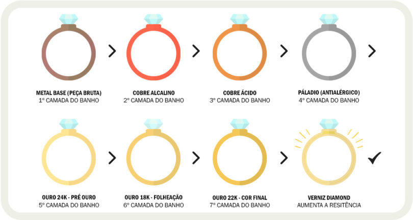

Você já pensou em ganhar dinheiro trabalhando com semi-jóias?
Está precisando agregar uma renda extra? Pensa em poder passar mais tempo com sua fámilia e ter mais flexibilidade nos seus hórarios? Ou até mesmo largar seu emprego na CLT?
Nós da A K E M A Joías e acessórios tem uma oprtunidade incrivél para você! Nós disponibilizamos uma maleta cheinha de novidades, sem custo algum para você se tornar uma de nossas revendedoras!!!
Por que escolher as Nossas semi-jóias? deixa a gente te explicar primeiro sobre nossa qualidade...
Brilho, uniformidade e qualidade do banho
Este é o ponto mais importante antes de você realizar uma compra, pergunte sempre a empresa sobre as camadas de ouro e o processo de banho utilizado. Um Banho de Qualidade deve ter no mínimo 10 milésimos de espessura de ouro. A AKEMA tem o melhor banho de ouro do segmento de joias folheadas, as nossas semijoias recebem até 20 milésimos, que é o dobro que o mercado usual oferece, e por isso nossos clientes fidelizam.
Uma semijoia de qualidade possui um brilho bem particular e muito próximo a peças em ouro maciço, além de ter uma cor muito uniforme, sua textura também deve ser isenta de imperfeições.
Garantia
Uma semijoia de qualidade com certeza terá um período de garantia do fabricante, o que vai demonstrar que a empresa confia e afirma que está vendendo um produto legítimo e de boa procedência. nós daremos a você e suas clientes 6 meses de garantia para banho e também contra defeitos de fabricação!
acessórios
Também contamos com acessórios lindos, todos de linha premium!
INVESTIMENTO ZERO!
Isso mesmo você não precisa de dinheiro para começar a vender nossos produtos! enviaremos a você todo nosso catalogo para você montar sua primeira maleta agora mesmo!